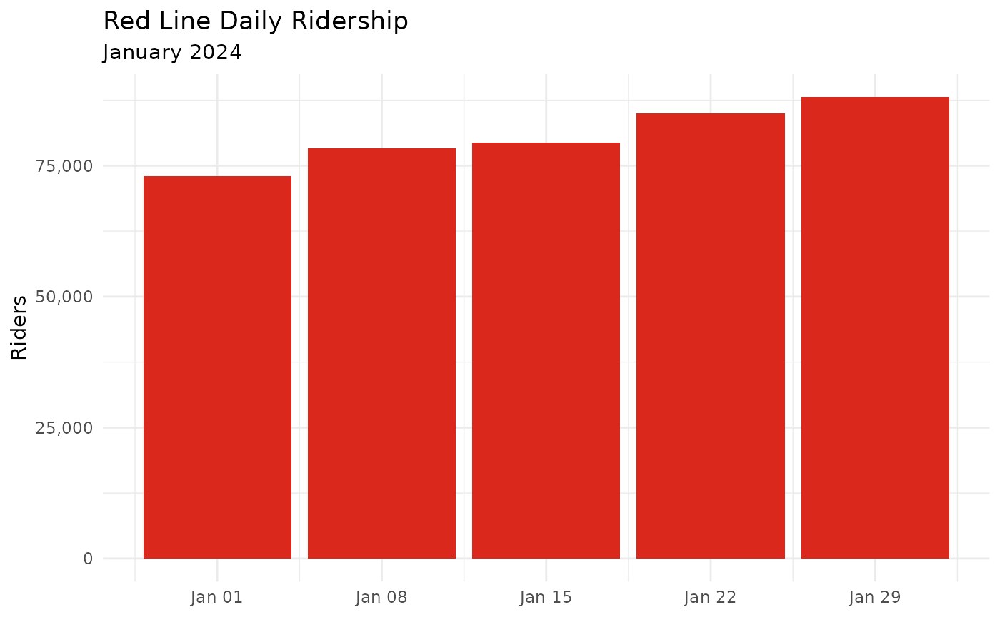
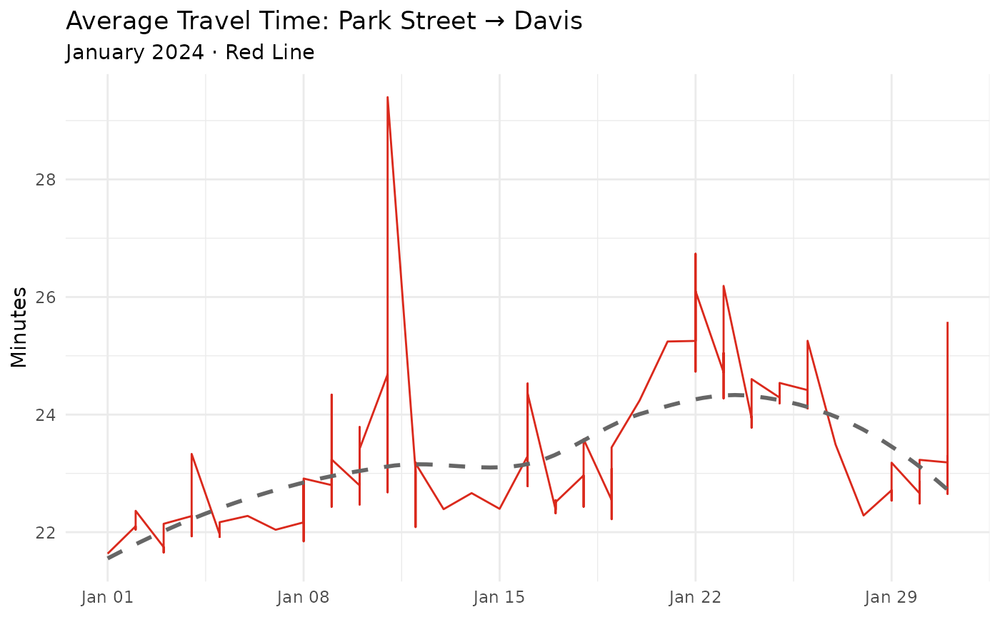
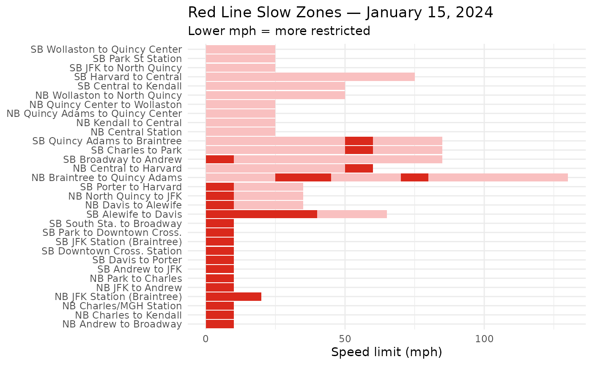

This vignette walks through a realistic analysis of Red Line performance in January 2024. By the end you’ll have three charts:
- Daily ridership
- Average travel time from Park Street → Davis
- Where slow zones were on a specific day
Setup
library(transitmattr)
library(dplyr)
#>
#> Attaching package: 'dplyr'
#> The following objects are masked from 'package:stats':
#>
#> filter, lag
#> The following objects are masked from 'package:base':
#>
#> intersect, setdiff, setequal, union
library(ggplot2)New to these packages?
dplyris for cleaning and reshaping data;ggplot2is for charts. Install them withinstall.packages(c("dplyr", "ggplot2"))if needed.
1. Daily ridership
Pull the data
ridership_raw <- tm_ridership(
start_date = "2024-01-01",
end_date = "2024-01-31",
line_id = "line-Red"
)ridership_raw is a list where each item
represents one day’s record. Let’s flatten it into a data frame:
Explore the columns
glimpse(ridership_df)
#> Rows: 5
#> Columns: 2
#> $ date <chr> "2024-01-01", "2024-01-08", "2024-01-15", "2024-01-22", "2024-01…
#> $ count <int> 72986, 78348, 79336, 84922, 88096Plot it
library(ggplot2)
ggplot(ridership_df, aes(x = as.Date(date), y = count)) +
geom_col(fill = "#DA291C") +
scale_y_continuous(labels = scales::comma) +
labs(
title = "Red Line Daily Ridership",
subtitle = "January 2024",
x = NULL,
y = "Riders"
) +
theme_minimal()
What to notice: Weekends typically show lower ridership. If a day is unusually low on a weekday, there may have been a service disruption — check
tm_alerts()for that date.
2. Travel time from Park Street to Davis
This uses the aggregate endpoint, which gives you long-run averages rather than individual trips.
Finding stop IDs
Travel time endpoints need platform stop IDs, not
parent station IDs. Each station has separate IDs for each direction.
Use tm_stops() to look them up:
red_stops <- tm_stops("Red") # MBTA route ID, not "line-red"
# Stations are in red_stops$stations — explore one
str(red_stops$stations[[1]])Tip: Northbound (toward Alewife) stop IDs are even numbers; southbound (toward Ashmont/Braintree) are odd. For example, Park Street northbound is
70076and southbound is70075.
Pull the data
# Northbound: Park Street (70076) → Davis (70064)
travel_raw <- tm_aggregate_travel_times2(
from_stop = "70076",
to_stop = "70064",
start_date = "2024-01-01",
end_date = "2024-01-31"
)Clean it up
library(dplyr)
travel_df <- bind_rows(travel_raw$by_date)
# Travel times come back in seconds — convert to minutes
travel_df <- travel_df |>
mutate(
date = as.Date(service_date),
travel_min = mean / 60
)
head(travel_df)
#> # A tibble: 6 × 15
#> `25%` `50%` `75%` count holiday max mean min peak service_date std
#> <dbl> <dbl> <dbl> <int> <lgl> <dbl> <dbl> <dbl> <chr> <chr> <dbl>
#> 1 1235. 1270. 1334. 112 TRUE 2011 1298. 1132 all 2024-01-01 108.
#> 2 1251 1302 1362 133 FALSE 2234 1326. 1178 all 2024-01-02 128.
#> 3 1237. 1294. 1356 132 FALSE 1572 1305. 1172 all 2024-01-03 82.6
#> 4 1257. 1308. 1370. 130 FALSE 2674 1336. 1178 all 2024-01-04 156.
#> 5 1241 1288 1344. 131 FALSE 2305 1318. 1167 all 2024-01-05 135.
#> 6 1230. 1304. 1379 116 FALSE 1893 1337. 1134 all 2024-01-06 142.
#> # ℹ 4 more variables: sum <dbl>, weekend <lgl>, date <date>, travel_min <dbl>Plot it
library(ggplot2)
ggplot(travel_df, aes(x = date, y = travel_min)) +
geom_line(color = "#DA291C") +
geom_smooth(method = "loess", se = FALSE, linetype = "dashed",
color = "grey40") +
labs(
title = "Average Travel Time: Park Street → Davis",
subtitle = "January 2024 · Red Line",
x = NULL,
y = "Minutes"
) +
theme_minimal()
#> `geom_smooth()` using formula = 'y ~ x'
Dashed line is a smooth trend. If travel times creep up over time it can signal slow zones accumulating — which leads us to section 3.
3. Slow zones on a specific day
Speed restrictions (“slow zones”) are places where trains must go slower than normal, usually because of track issues.
slow_raw <- tm_speed_restrictions("line-Red", "2024-01-15")
library(dplyr)
if (!isTRUE(slow_raw$available)) {
message("No slow zone data available for this date.")
} else {
slow_df <- bind_rows(slow_raw$zones)
glimpse(slow_df)
}
#> Rows: 60
#> Columns: 11
#> $ date <chr> "2024-01-15", "2024-01-15", "2024-01-15", "2024-01-15", "2…
#> $ trackFeet <int> 699, 412, 599, 500, 300, 86, 475, 99, 513, 100, 100, 800, …
#> $ reason <chr> "Track", "Track", "Track", "Track", "Track", "Track", "Tra…
#> $ speedMph <int> 10, 10, 25, 10, 10, 10, 10, 25, 10, 10, 25, 25, 25, 25, 25…
#> $ fromStopId <chr> "place-pktrm", "place-andrw", "place-chmnl", "place-chmnl"…
#> $ reported <chr> "2023-08-25", "2023-08-01", "2023-08-02", "2023-10-19", "2…
#> $ lineId <chr> "line-Red", "line-Red", "line-Red", "line-Red", "line-Red"…
#> $ description <chr> "SB Park to Downtown Cross.", "SB Andrew to JFK", "SB Char…
#> $ id <chr> "572027", "565480", "567089", "000108R", "000108R", "50852…
#> $ toStopId <chr> "place-dwnxg", "place-jfk", "place-pktrm", "place-knncl", …
#> $ direction <chr> "SB", "SB", "SB", "NB", "NB", "NB", "NB", "NB", "NB", "SB"…
library(ggplot2)
# Each row is a slow zone segment; visualize by location and speed limit
ggplot(slow_df, aes(x = reorder(description, speedMph), y = speedMph, fill = speedMph)) +
geom_col() +
coord_flip() +
scale_fill_gradient(low = "#DA291C", high = "#f9c0c0") +
labs(
title = "Red Line Slow Zones — January 15, 2024",
subtitle = "Lower mph = more restricted",
x = NULL,
y = "Speed limit (mph)"
) +
theme_minimal() +
theme(legend.position = "none")
Note: If
slow_raw$availableisFALSE, there were no active slow zones that day. Try a different date or check during a period with known track work.
4. Putting it all together
Here’s a pattern you’ll use over and over: pull → bind_rows → mutate → ggplot. Once you’re comfortable with it, try exploring:
-
tm_routes()— see all available lines before picking one -
tm_stops("Orange")— look up stop IDs for a different line -
tm_aggregate_headways()— how often trains come, over time -
tm_line_delays()— delay minutes caused by alerts -
tm_trip_metrics()— on-time performance per trip
Troubleshooting
| Problem | What to try |
|---|---|
bind_rows() gives an error |
Use str(raw_result) to see the exact structure, then
drill in with $
|
All values are NULL
|
The API may have no data for that date; try a nearby weekday |
| Columns have unexpected names | Run names(df) and adjust your mutate()
references |
| The API call fails | Run tm_healthcheck() to verify the API is up |